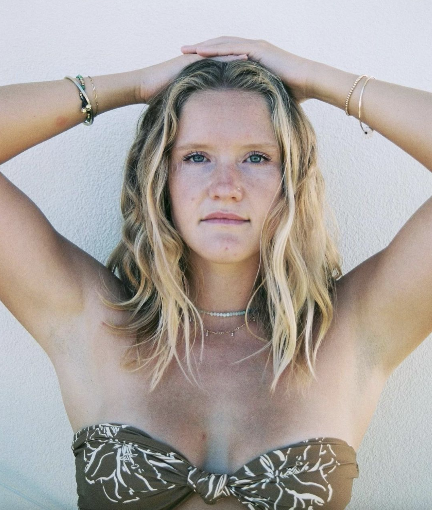

<div class="about-container">
  <div class="about">
    <p class="p-about">
    the other day, a friend asked me "what is your why?". the first thing that came to mind was the search
    for deep, meaningful, and genuine connection. the second thing was seeing, capturing, and sharing, as much beauty
    and
    magic i possibly can. being able to capture what i see through photography will always
    amaze me and continues to be one of the most magical things i get to do.
    the goal of this site is to do just that. let's connect, let's share,
    let's lift one another up.
    <br><br>
    in addition to photography, i work remotely as a software and webflow developer. i graduated from loyola marymount university 
    in may 2018 with a bachelors of science in computer science and began my software developement career shortly after.
    i started contract freelance development in january 2020 which has allowed me the flexiblity to pursue photogrpahy more seriously while
    continuing to work in software.
    </p>
    
  </div>

</div>

<!-- i'm a big outdoorsy gal always looking for my next adventure. 
      i love tapping into my creative side with photography and projects with visual components.
      i do remote software development specializing in frontend and webflow development. 
      i graduated from loyola marymount university in may 2018 with a bachelors of 
      science in computer science. -->
